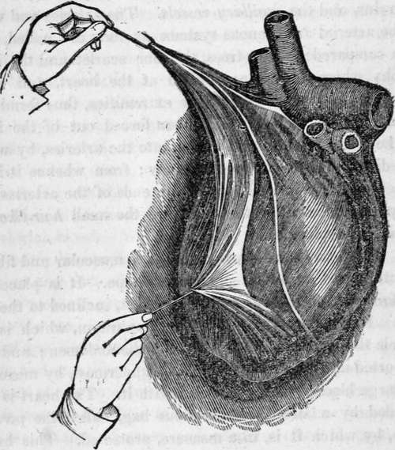

Chapter XIX. The Circulation Of The Blood
Description
This section is from the book "Human Physiology For The Use Of Elementary Schools", by Charles Alfred Lee. Also available from Amazon: Human Physiology, for the Use of Elementary Schools.
Chapter XIX. The Circulation Of The Blood
1. That the blood is constantly circulating throughout the human body, was unknown till Harvey made the discovery, two hundred years ago. Before this time, air was supposed to circulate through the arteries, or air tubes; hence their name. The reason why this great truth was not found out sooner, was, that on examining dead bodies, the arteries were always found empty of blood ; owing to the contractile force with which they are endowed.
2. The circulation is called one of the vital functions, because it is essential to life. Its suspension for a short time throughout the body is certainly fatal. Hence we find that diseases of the heart and great vessels are apt to terminate in sudden death, while in other diseases the approach of death is gradual.
3. Life, in all the organs, is maintained by the presence of arterial blood. Without it they could not be nourished, nor could they perform their appropriate functions. The moment any part of the body is deprived of blood, from that time it ceases to grow; it withers and decays, and soon becomes a mass of dead matter. If the arteries which supply any of the limbs with blood are tied, the limb soon grows black, and mortifies. In the same way, if we stop the circulation of sap in a tree by girding or dividing the vessels which convey this fluid to the branches, the tree immediately dies. Blades of grass and corn are often destroyed by worms severing the same vessels with their teeth; and peach and other fruit trees, are generally short lived from the same cause.
4. Some animals are destitute of a circulation, such as insects, worms, etc. Air and food are essential to the existence of life, but the food cannot be changed into blood before the air has acted on it by one of its principles, oxygen. Now, if these two principles are not introduced into the system in the same place, but in separate organs, it is evident they cannot be employed in nutrition till they are brought together ; which is done in the lungs ; the blood is there fitted to carry nourishment and life to every part of the system. Every animal then, that has a local respiration, must also have a circulation.
5. The organs of the circulation are the heart, arteries, the veins, and the capillary vessels. The arteries and veins, or the arterial and venous systems as they are called, have been compared to two trees, the one scarlet and the other purple, whose trunks are united at the heart, and whose branches are connected at their extremities, thus forming a regular circle. The blood is then forced out of the heart by the contraction of that organ, into the arteries, by which it is distributed throughout the body ; from whence it is re turned by the veins. Between the ends of the arteries and the commencement of the veins, are the small hair like ves. sels called capillaries.
6. The heart is a hollow organ of a muscular and fibrous structure, and somewhat conical in shape. It is placed in the fore part of the cavity of the chest, inclined to the left side. It rests on the midriff or diaphragm, which is the muscle that separates the chest from the abdomen ; and it is supported also at its base which is uppermost, by means of the large blood vessels connected with it. The heart is surrounded by a strong membranous bag, called the pericardium, by which it is, in a measure, protected. This bag is the seat of dropsy of the heart, and is generally found to contain more or less water after death.
7. In the human species, and throughout the class mam malia, the heart is a double organ ; consisting in fact of two single hearts, each of which gives motion to a different kind of blood. One of these, the right heart, receives the dark venous blood which is returned from all parts of the body, and sends it through the lungs, from whence it returns to the left side of the heart changed to bright arterial blood, and is distributed by the aorta, or great artery, through the system. The right heart then may be called the venous or pulmonary heart, the left, the arterial heart. Both, however, are so united together, as to form in appearance but one heart.
View of the heart inclosed in its bag, or pericardium, which is a serous membrane. It is here laid open and turned back.
8. Each of these hearts has two separate cavities; one to receive the blood, and the other to pump it out. The cavities which serve as receptacles, are called auricles, those which, by contracting, force it out, are called ventricles. The walls of the heart are composed of strong muscular or fleshy fibres, crossing and interlacing one another, and those of the ventricles are much thicker than those of the auricles.
9. The cavities in the right side of the heart are triangular in shape, and those of the left, oval. Each cavity will hold about two ounces of blood. Between each of these two cavities or chambers, there is a passage, which is closed with a valve; so that when the ventricles contract, the blood, instead of passing through into the auricle, is poured into the arteries. This valve is formed by the doubling of a thin, transparent membrane, which lines the cavities, and extends both through the veins and arteries. The valve in the right side of the heart is called tricuspid, and that in the left, bicuspid or mitral.
10. There are also valves placed at the orifice of the great arteries of the heart, the pulmonary and aorta, as they are given off from the right and left ventricles. They differ somewhat from the former, by being of a half moon or semilunar shape, and formed by folds of the lining membrane of the jirteries. These are called sigmoid valves ; and their use is to prevent the blood from flowing back from the arteries into the ventricles. Where the vena cava, or the great vein which returns all the blood, empties into the right auricle of the heart, there is another valve, called the Eustachian valve. (See Fig. 2.)
Continue to:
Tags
humans, anatomy, skeleton, bones, physiology, organs, nerves, brain